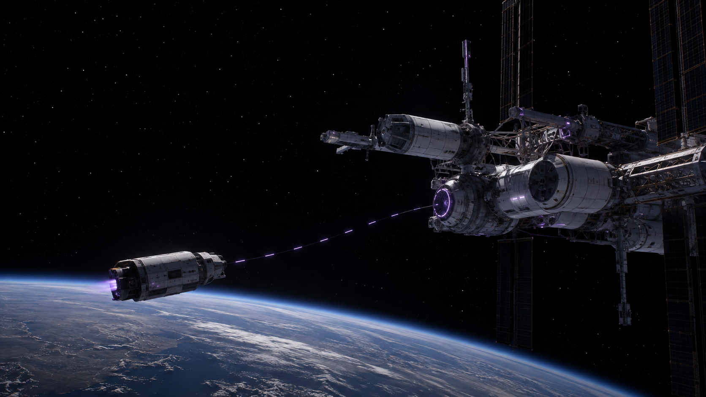
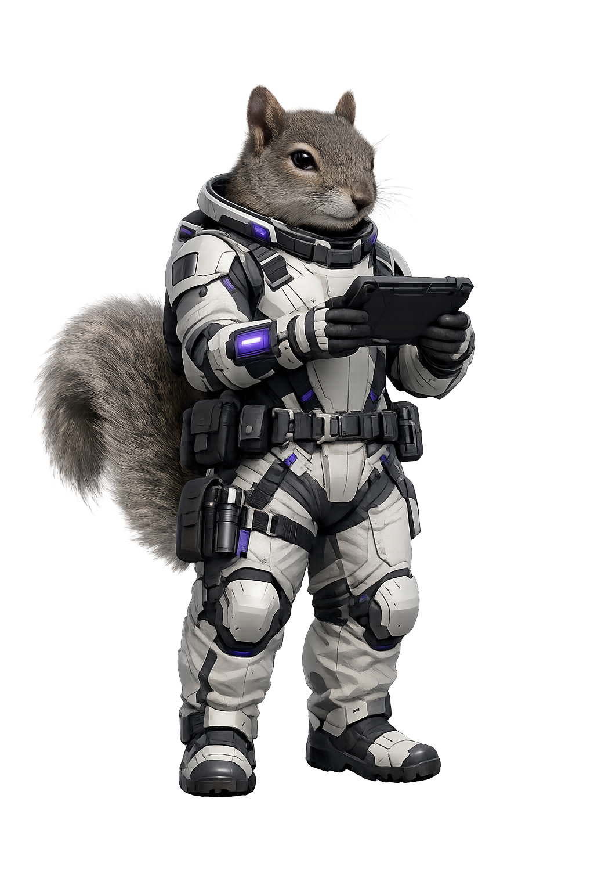

“Mission Control, docking alignment requires twelve manual corrections before every cargo transfer.”
MISSION CONTROL BRIEFING
Lost in
Translation
Merchandising Technical Work for Impact
Incoming transmission
MESSAGE RECEIVED
MEANING UNCLEAR
Please clarify.
The translation
Docking alignment requires twelve manual corrections before every cargo transfer.
If we spend one six-hour EVA redesigning the sequence now, we can make future cargo transfers predictable and protect upcoming mission schedules.
Impact clearInvestment visibleNext step understood
What changed?
The work didn’t change. The translation did.
Every role sees a signal
Software EngineerArchitecture is constraining change.
Design EngineerThe crew workflow creates friction.
QA EngineerThe same regression pattern repeats.
DevSecOps EngineerOperational risk is increasing.
Product ManagerMission schedules are less predictable.
SHARED
OPPORTUNITY
OPPORTUNITY
You already see important things. Help the rest of us see them too.
Merchandising, redefined
LAUNCH MANIFEST
AVAILABLE CAPACITY
Customer capability MANIFESTED
Reliability improvement MANIFESTED
Docking sequence CANDIDATE
Secondary enhancement NOT MANIFESTED
We can only ship so much.
Merchandising helps others understand what should change on the manifest and why.
The intentional practice of translating work into value so the right people understand it, support it, and help it gain momentum.
Clarify the signal, then show the value it points to.
From signal to value
SIGNALDocking requires twelve manual corrections.
IMPLEMENTATIONRedesign the docking sequence.
CHANGEFewer manual corrections.
OUTCOMEPredictable cargo transfers.
VALUEMore mission time spent on the mission.
Because we do this, what becomes easier, safer, faster, clearer, or more valuable?
The Four Ps begin with a signal
The Four Ps begin with a signal.
Every proposal starts as something someone has noticed. The Four Ps help turn that signal into something people can understand and act on.
THE SIGNALWhat have we noticed?
Product — what are you really offering?

Redesigned sequence
Fewer corrections
Predictable docking
Faster cargo transfer
More mission time
The product is not always what you build. It is often what your work makes possible.
Place — meet the audience where they are
SAME SIGNALDocking requires twelve manual corrections.
Same truth. Different audience. Different translation.
Price — make the investment visible
CREW2 engineers
TIME1 EVA / 6 hours
TRADEOFFRoutine maintenance shifts
EXPECTED RETURNPredictable future docking
We are asking for one six-hour EVA now so future cargo transfers become predictable, while temporarily shifting routine maintenance.
A persuasive request makes both the investment and the tradeoff visible.
Promotion — momentum is intentional
Engineering review
Mission brief
Planning
Demo
Status update
Repetition→Recognition→Understanding→Alignment→Momentum
Momentum is earned through clarity and repetition, not volume.
A practical translation toolkit
SIGNALWhat have we noticed?
IMPACTWho or what is affected?
OUTCOMEWhat becomes different?
INVESTMENTWhat are we asking for?
EVIDENCEWhat supports the signal?
NEXT STEPWhat should happen now?
This is not paperwork. It is thinking made visible.
From request to useful discussion
We should redesign the docking sequence because it is difficult to maintain.
CONTEXT INCOMPLETEEvery cargo transfer now requires twelve manual corrections, creating schedule risk. We propose one focused EVA before the next mission to make future docking predictable.
READY FOR DISCUSSIONClear translation does not guarantee agreement. It makes useful discussion possible.
Mission simulation
Bring your own signal.
Choose real work that deserves greater awareness, support, or momentum.
Technical constraintCustomer opportunityQuality concernDesign improvementOperational riskProcess change
Choose one signal.Merchandise it for one audience.
Mission canvas
SIGNALWhat have you noticed?
PRODUCTWhat outcome are you offering?
PLACEWho needs to understand?
PRICEWhat investment or tradeoff?
PROMOTIONWhere should this appear again?
EVIDENCEWhat do you know or infer?
ASKWhat should happen next?
05:00

Crew debrief
Who discovered something about their own idea?
What was your signal?
What outcome did you identify?
Who needs to understand it?
What are you asking for?
What changed as you translated it?
The shared language
SIGNAL
TRANSLATION
UNDERSTANDING
MOMENTUM
What mission are you asking people to approve?
Every mission begins with someone noticing a signal.
Make sure the rest of us can see it too.